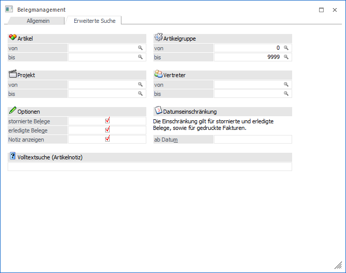

Im Register "Erweiterte Suche" können weitere Selektionskriterien definiert werden. Zusätzlich besteht die Möglichkeit die generelle Anzeige im Register "Allgemein" zu beeinflussen.

Die folgenden Einstellungen des Registers werden benutzerspezifisch gespeichert:
ü Stornierte Belege
ü Erledigte Belege
ü Notiz anzeigen
ü ab Datum
Ø Artikel von / bis
An dieser Stelle kann auf Artikel selektiert werden, welche in den anzuzeigenden Belegen vorkommen müssen.
Hinweis
Wenn bei einem Artikel mit Ausprägungen nur der Hauptartikel für die Selektion berücksichtigt werden soll, dann muss bei Anwahl des Buttons "Anzeige" die STRG-Taste gedrückt werden.
Ø Artikelgruppe von / bis
An dieser Stelle kann auf Artikelgruppen selektiert werden, welche in den anzuzeigenden Belegen vorkommen müssen.
Ø Projekt von / bis
An dieser Stelle kann auf Projektnummern selektiert werden, welche in den anzuzeigenden Belegen vorkommen müssen (aus dem Belegkopf oder der Belegmitte).
Ø Vertreter
An dieser Stelle kann auf Vertreter selektiert werden, welche in den anzuzeigenden Belegen vorkommen müssen (aus dem Belegkopf oder der Belegmitte).
Ø Stornierte Belege
Bei Aktivierung dieser Option werden auch stornierte Belege angezeigt.
Ø Erledigte Belege
Bei Aktivierung dieser Option werden auch erledigte Belege angezeigt. Zu diesen zählen folgende Belege:
ü Angebote, die in einen Auftrag umgewandelt wurden
ü Aufträge, die komplett ausgeliefert wurden; d.h. es wurden z.B. Lieferscheine über den kompletten Auftrag erfasst.
Hinweis
Wenn im Belegmanagement mit dem Autoarchiv gearbeitet wird, dann werden alle Arten von erledigten Aufträgen (d.h. auch Aufträge, welche direkt in eine Faktura gewandelt wurden) angezeigt.
ü Lieferscheine, die als Sammelfaktura gedruckt wurden.
Hinweis
Wenn im Belegmanagement mit dem Autoarchiv gearbeitet wird, dann werden alle Arten von erledigten Lieferscheinen angezeigt.
Ø Notiz anzeigen
Durch die Aktivierung dieser Option werden im Register "Allgemein" in den Anzeigemöglichkeiten "Übersicht" und "Detail" jeweils die ersten 50 Zeichen der "Belegnotiz" pro Beleg angezeigt.
Ø ab Datum
Da es nicht immer gewünscht ist alle Belege aus allen Wirtschaftsjahren zu sehen (z.B. aus Gründen der Übersichtlichkeit) kann hier ein Datum eingetragen werden, ab dem auch die stornierten Belege (jene Belege mit den Belegstati LLLL), die erledigten Belege (z.B. jene Belege mit den Belegstati ----) und die gedruckten Fakturen angezeigt werden sollen.
Ø Volltextsuche (Artikelnotiz)
An dieser Stelle kann ein Suchbegriff hinterlegt werden, nach dem in den Artikelnotizen (RTF-Beschreibungsfeld für Artikel und Texte) gesucht werden soll. Es handelt sich hierbei um eine Volltextsuche, d.h. es kann auch nur nach dem Bestandteil eines Wortes gesucht werden. Soll nach mehreren Worten gesucht werden, dann können diese mit dem Platzhalter % verbunden werden.